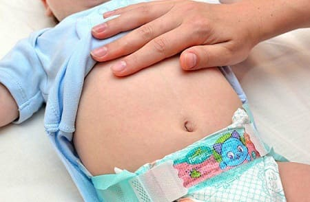
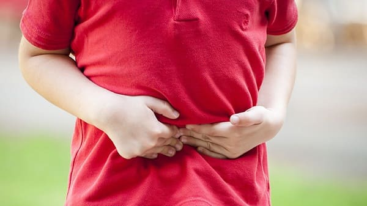
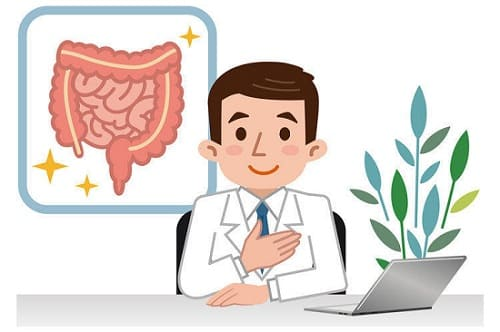

Боль в животе — одна из самых сложных и тревожных ситуаций для родителей, потому что вы не можете определить ее причину. Боль в животе могут вызывать безобидные газы в кишечнике или изжога, опасный для жизни аппендицит, а родителям очень трудно определить, насколько это серьезно. Жалоба на «больной животик» может возникнуть внезапно или появляться и исчезать на протяжении нескольких месяцев; для разных случаев — и лечение разное. Мы разделили нашу тему на две части: острая боль в животе и хроническая боль.
БОЛЬ В ЖИВОТЕ: ОСТРАЯ ИЛИ НЕДАВНЯЯ
Этот раздел поможет вам понять различные причины острой боли в животе, подскажет, насколько серьезна боль в животе у вашего ребенка, и объяснит, что вы можете сделать.
Боль в животе в первые 6 месяцев жизни. Выяснение причин боли в животе у младенцев — трудная задача, поскольку они не способны описать, как и где болит. Они даже не могут сказать, что болит именно живот. Но если ваш ребенок периодически отчаянно и безутешно кричит, при этом подтягивая ноги к напряженному Животу, испускает газы, но через час-другой все проходит, после чего малыш мирно спит, — вы можете быть уверены, что серьезных нарушений нет. Но, конечно, вы захотите узнать, что вызывает эти приступы, чтобы воспрепятствовать их повторению. Вот типичные причины:
Пищевые аллергены, проникающие в грудное молоко.
Непереносимость молочной смеси. Если у младенца есть аллергия или повышенная чувствительность к определенной смеси, он даст вам это понять.
Колики. Это те самые безутешные крики на протяжении нескольких часов. Ребенок явно кричит от боли, и все указывает, что ее источник — живот. Часто это происходит из-за чего-то «лишнего» в грудном молоке или из-за непереносимости молочной смеси.
Газы. Это наиболее распространенная причина. Практически у каждого ребенка бывают приступы беспокойства, связанные с избыточным газообразованием в кишечнике. Как правило, они короче, чем приступы колик. Газы случаются из-за того, что кормящая мама съела какой-либо раздражающий продукт, из-за непереносимости молочной смеси, заглатывания воздуха во время крика или недостаточного срыгивания воздуха после кормления. Основное различие между коликами и газами: приступ боли, возникшей из-за повышенного газообразования, проходит, как только вы устраните причину, а колики — нет.
Серьезные причины. Ознакомьтесь информацией о кишечной непроходимости, чтобы знать признаки той чрезвычайно серьезной причины боли в животе у младенцев. К счастью, такие ситуации чрезвычайно редки.

Подход к боли в животе у детей старше 6 месяцев несколько отличатся. У нее другие причины, да и родители обычно дают ключ к разгадке на основании своих наблюдений за поведением ребенка и интерпретации его сигналов. Сначала мы обсудим различные несерьезные причины боли. Описанные ниже ситуации хотя и неприятны, но, как правило, не требуют неотложной помощи или срочного осмотра врача.
1. Кишечные инфекции. Самая частая причина боли в животе — расстройство желудка. Если у вашего ребенка рвота, понос, повышена температура тела, то вы можете быть уверены, что боль в животе — проявление инфекции.
2. Пищевые отравления. Это не «отравления» в прямом смысле слова. Термин просто подразумевает, что ваш ребенок съел продукт с «плохими» бактериями. Если его внезапно скручивает от спазматической боли в животе, у него рвота и все это началось через 1—8 часов после употребления какой-нибудь подозрительной еды — возможно, имеет место пищевое отравление.
3. Изжога. Она случается, когда ребенок съел пищу, которая вызывает усиление образования кислоты в желудке, и проявляется жгучей болью, обычно в эпигастральной области (верхние средняя и левая части живота ниже ребер) или в груди. Ее легко отличить от пищевого отравления или кишечной инфекции по жгучему характеру боли и отсутствию поноса и повышения температуры тела. Обычно виновниками являются томатный соус, жирная пища, цитрусовые и соки из них и острые продукты.
4. Нарушение функции желудка. Это характерная тупая боль, которая начинается сразу после еды, без особой причины. Болит обычно в эпигастральной области или в центре живота. Вы можете отличить ее от пищевого отравления или кишечной инфекции по началу сразу после еды и отсутствию поноса и лихорадки. Иногда боль появляется после употребления слишком большого количества пищи или непривычных продуктов. Никакого специального лечения нет, за исключением обычных обезболивающих, теплой ванны и нежного массажа животика.
5. Газ. Возможно, это самая частая причина боли в животе, не сопровождаемой рвотой и поносом. Ребенок испытывает режущие боли, перемещающиеся по всему животу. Дети постарше могут говорить, что чувствуют, как газовые пузыри двигаются в животе во время массажа. К сожалению, эти боли могут быть довольно сильными. Препараты симетикона (продаются без рецепта) помогают выведению избытка газов.

6. Непереносимость лактозы или аллергия на молоко. Эта боль похожа на расстройство желудка, но при этом возможны и избыточное газообразование, и спазмы кишечника. Обычно развивается через 30—60 минут после употребления коровьего молока.
7. Болезненность мышц брюшного пресса. Если ваш ребенок недавно занимался спортом или выполнял движения, требующие активной работы мышц брюшного пресса, то у него могут очень болеть эти мышцы. Болезненность усиливается при надавливании на живот или при работе этих мышц — например при попытке сесть. Мышцы пресса могут болеть и после длительной рвоты. Ибупрофен способен облегчить эти боли.
8. Боли при менструациях. Это наиболее частая причина болей в животе у девочек-подростков. После того как первые месячные прошли, причина болей становится ясна, тем более что они сопровождаются менструацией. Но первые один- два приступа могут заставить беспокоиться. Они похожи на спазматические боли внизу живота и могут отдавать в спину. Менструация, а вместе с ней и боли могут начаться в 9—10 лет. В такой ситуации ибупрофен будет лучшим другом вашей дочери.
9. Запор. Чаще это причина хронической боли в животе. Тем не менее у вашего ребенка запор может начаться внезапно, сопровождаясь сильной болью в животе. Боль может ощущаться в любом участке живота, хотя чаще — вокруг пупка. Боль носит волнообразный характер в соответствии с естественными сокращениями толстой кишки, пытающейся продвинуть твердые каловые массы. Рассказ ребенка о недавно начавшихся затруднениях отхождения твердых каловых масс, как и наличие уже известной склонности к запорам послужат ключом к разгадке этой ситуации.
10. Инфекция мочевого пузыря. Боль внизу живота, сопровождающаяся болезненным или учащенным мочеиспусканием, может быть признаком инфекционного воспаления мочевого пузыря.
ДИАГНОСТИКА НЕОПАСНОЙ ОСТРОЙ БОЛИ В ЖИВОТЕ
При всех перечисленных неопасных болях в животе врач не может определить причину боли с помощью только осмотра. Это выясняется по мере изучения ситуации, сопоставления подсказок, описанных для каждого случая. Что врач может — это исключить более серьезные причины, описанные в следующем разделе. Сделав это, он может подсказать вам, какие из менее опасных причин могли вызвать боль и как ее уменьшить. В конце концов, не столь важно определить точную причину неопасной боли — на это может уйти много времени.
СОВЕТ ДОКТОРОВ СИРС: ПРАВИЛО ДВОЕК: ЕШЬТЕ ВДВОЕ РЕЖЕ, ВПОЛОВИНУ МЕНЬШЕ И ЖУЙТЕ ВДВОЕ ДОЛЬШЕ После любого острого заболевания, особенно вызванного пищевым отравлением, непереносимостью определенных продуктов или обратным забросом пищи, кишечник, как и любой поврежденный орган, нуждается в отдыхе. Питание растительной пищей меньше повреждает кишечник. |
КОГДА ВОЛНОВАТЬСЯ
Существуют две срочные ситуации, которые вызывают сильную боль в животе и приводят к серьезным осложнениям, если их не выявить и не лечить.
Аппендицит. Вероятно, это самая тревожная причина острой боли в животе для родителей. Аппендикс — отросток толстого кишечника, длиной около 1 дюйма (2,5 см), располагающийся в нижней правой части живота. Он может инфицироваться и воспаляться по множеству причин. Боль чаще всего начинается как слабый или умеренный дискомфорт в области вокруг пупка. К сожалению, в этом же месте дети ощущают боль из-за большинства других неопасных причин, поэтому аппендицит трудно выявить на ранней стадии. Затем боль опускается в правую нижнюю часть живота и становится сильнее. Вот классические симптомы аппендицита:
• сильная боль в нижней правой части живота;
• боль, как правило, постоянная, не имеет волнообразного характера;
• боль постепенно нарастает;
• повышение температуры тела;
• отказ от еды;
• рвота — бывает иногда, но не всегда;
• отказ от прогулки — ребенок с аппендицитом часто ложится и сворачивается «калачиком» в позу эмбриона.
Имейте в виду, что многие болезни начинаются с рвоты, лихорадки и боли в животе. Не делайте поспешного вывода об аппендиците, не понаблюдав ребенка на протяжении нескольких часов. При аппендиците редко бывают частая рвота и понос, которые характерны для расстройства желудка. Большинство источников боли в животе расположены не в нижней правой его части. Если боль не опускается в нижнюю правую часть живота, не становится сильнее и ваш ребенок не выглядит больным, то аппендицит маловероятен. Он также очень редко бывает у детей младше 4 лет.
СОВЕТ ДОКТОРОВ СИРС: ТЕСТ ПРЫЖКОМ Попросите ребенка встать и подпрыгнуть. Если у него аппендицит, это вызовет сильную острую боль. Ребенок откажется прыгать повторно — он может отказаться даже в первый раз. Если же он несколько раз подпрыгивает, не испытывая особого дискомфорта, то, скорее всего, у него не аппендицит (учтите, это не окончательный тест, а всего лишь инструмент, помогающий определиться с возможностью диагноза аппендицита). |
Кишечная непроходимость. Это, безусловно, самая опасная для жизни причина острой боли в животе, но и самая редкая. Для нее характерна внезапная мучительная боль в животе, в большинстве случаев вокруг пупка, сопровождающаяся непрерывной рвотой фонтаном. Особенность этой рвоты — темно-зеленый цвет рвотных масс. Важно различать рвоту светло- зеленым слизистым содержимым желудка (что неопасно) и темно-зеленой желчью (цвет сосновой хвои). Существуют две ситуации в кишечнике, при которых может развиться острая кишечная непроходимость:
Если у вашего младенца или ребенка постарше есть описанные выше признаки, вы должны немедленно вызвать врача или отвезти ребенка деление неотложной помощи.
Вывод: если у вашего ребенка сильная боль, его неоднократно рвет темно-зеленой желчью (а не светло-зеленой слизью) и он выглядит серьезно больным, вы должны немедленно обратиться за медицинской помощью.
БОЛЬ В ЖИВОТЕ: ХРОНИЧЕСКАЯ ИЛИ ПОВТОРЯЮЩАЯСЯ
Если живот у вашего ребенка, то болит, то не болит на протяжении более двух недель, пора поподробнее рассмотреть, что же происходит. Предлагаем вам наше руководство по разгадке тайны боли в животе.
ПОЧЕМУ ТОНКИЙ КИШЕЧНИК НАСТОЛЬКО ЧУВСТВИТЕЛЕН:
ТРИ ПЕРИОДА РОСТА КИШКИ
По мере взросления дети проходят периоды, когда у них часто бывают боли, связанные с ростом кишечника. Две анатомические особенности делают кишечник самым чувствительным органом человеческого тела. Во-первых, он содержит больше нервных окончаний, чем любой другой орган, за исключением мозга, отсюда и выражение «кишечный мозг». Это означает, что раз в кишечнике много болевых рецепторов и чувствительных к эмоциям нервов, то ребенок часто будет чувствовать активность кишечника. Далее, кишки имеют большую площадь поверхности, чем любая другая система, включая кожу. Анатомы рассчитали, что если расправить всю поверхность кишечника, то она займет площадь, большую, чем теннисный корт.
В течение первого года жизни незрелый кишечник младенца приспосабливается переваривать все виды продуктов. Так, непереносимость некоторых продуктов возглавляет список причин болей в животе у младенцев. Когда пищеварение научится переваривать обычные продукты, «отстающий» кишечник должен справиться с выведением остатков. Запор становится следующей распространенной причиной детского кишечного дискомфорта у малышей и дошкольников.
Затем наступает беспокойное время младшей школы и пубертатного периода. Это стадия, когда головной мозг ребенка начинает реагировать на жизненные обстоятельства: социальное и школьное давление, домашние проблемы. Эмоции, которые ребенок испытывает в головном мозге, отражаются и в «кишечном мозге». Эмоциональные потрясения — самая распространенная причина повторяющихся болей в животе в этом возрасте. Теперь вы знаете о типичных «болях роста» кишечника.

СОВЕТ ДОКТОРОВ СИРС: ЕСЛИ СОМНЕВАЕТЕСЬ - ПРОВЕРЬТЕ Лучше всего наблюдаться у своего врача, который поможет вам решить, насколько опасна боль в животе. |
ПРИЧИНЫ
Как видите, такие боли реальны во все периоды детства. Они нуждаются в настоящем понимании и реальной помощи.
Запор. Это самая частая причина хронической боли в животе до наступления половой зрелости. Вот некоторые подсказки, которые помогут вам решить, является ли запор виновником боли:
• у вашего ребенка могут быть симптомы запора, такие как затруднения при дефекации; стул один раз в несколько дней, отхождение каловых масс в виде толстых, твердых «колбасок» или скоплений твердых шариков, для отхождения каловых масс ему приходиться натуживаться дольше 5 минут;
• поскольку толстая кишка сокращается несколько раз в день, стараясь вытолкнуть задержавшиеся твердые каловые массы, то ваш ребенок будет жаловаться на спазмообразную боль, которая стихает после того, как прекратится сокращение кишки, обычно через 10—30 минут. Он говорит: «Я чувствую себя лучше после того, как покакаю». Вы заметите, что боль не беспокоит его следующие пару дней, а затем цикл повторяется.
Непереносимость лактозы или аллергия на белки молока. Следует различать эти два состояния. Одно-это неспособность переварить молочный сахар (непереносимость), второе — аллергическая реакция всего организма на белки молока. Симптомы обоих включают:
Боль уменьшается при ограничении молока, йогурта, сыра или полном исключении молочных продукте из рациона.
Другие пищевые аллергии. Кроме молока, боль в животе могут вызывать аллергические реакции на другие продукты: пшеницу (и другие зерновые, содержащие глютен), сою, кукурузу, орехи, морепродукты. Аллергия на глютен (белок, который держится в пшенице, овсе, ржи, ячмене и некоторых других злаках) — следующая после молока наиболее распространенная причина кишечных колик.
Изжога, гастрит и язвы. Гастрит — медицинский термин, означающий устройство желудка; Гастроэзофагальный рефлюкс — медицинский термин, обозначающий изжогу, связанную с забросом содержимого желудка в пищевод. Воспаление стенки желудка вызывается перепроизводством желудочной (соляной) кислоты. Язвы появляются, когда эта кислота слишком глубоко разрушает слизистую оболочку желудка. Дети постарше опишут это как жгучую или режущую боль в верхней средней или левой части живота или в груди. Дети помладше могут описать боль как «печет». Существуют три главных причины гиперпродукции кислоты:
• стресс. Эмоциональное напряжение может вызвать увеличение выработки кислоты и боль в желудке;
• инфекция. Бактерия, именуемая Н. pylori, может поселиться в желудке и вызвать повышенную кислотность и боль. Эта инфекция часто поражает всю семью. Диагноз ставят с помощью простого исследования крови или биоптата, взятого во время эндоскопии желудка. Анализ крови не очень информативен у детей младше 5 лет;
• лекарства. Некоторые препараты могут раздражать слизистую оболочку желудка. Наиболее известны в этом плане аспирин и производные ибупрофена.
Воспаление кишечника. Если в младшем школьном и подростковом возрасте у вашего ребенка отмечались периодические повышения температуры тела, кровавый понос, боли в суставах и приступы «режущих» болей в животе, то следует подозревать воспалительное заболевание какого-либо отдела кишечника (название заболевания образуется присоединением суффикса «-ит», означающего воспаление, к названию пораженной кишки).
Кишечные инфекции. Существует множество бактерий и паразитов, которые поражают кишечник. Лучшим указателем на то, что боль в животе может быть вызвана кишечной инфекцией, является наличие поноса. Понос (диарея) — способ «кишечного мозга» быстро избавиться от раздражающего агента (еды или микробов). Эти инфекции диагностируются в лаборатории по образцам кала.

Психологические причины. Особенно распространены у детей 4-7 лет. Они могут жаловаться на боль в животе только для того, чтобы привлечь к себе внимание. Боль то ли есть, то ли нет, но ребенок иногда настолько жаждет внимания взрослых, что воспринимает ее как настоящую. Часто это происходит, когда в доме появляется новорожденный: старший ребенок начинает чувствовать себя лишним. Такое положение может образоваться во время переезда, при переходе в новую школу, неурядицах в семье или разводе родителей - в любой ситуации, когда ребенок ощущается ненужным, не уверен в себе чем-то переживает. Единственный способ выйти из этого положения знать реальность его боли. Скажите что-нибудь вроде: «Дорогой, я понимаю. У меня иногда тоже болит живот. Но скоро все будет в порядке».
Не уделяйте этому слишком много внимания, не пытайтесь помочь ребенку «вылечить» боль: например, не надо укладывать его и гладить животик, чтобы облегчить боль. Лучше постарайтесь уделить ему дополнительное время, когда он НЕ жалуется — это уменьшит его желание жаловаться в поисках внимания. Помните, что нет никакого способа убедиться, что боль связана с психологическими проблемами. Используйте свою интуицию и не игнорируйте боль дольше, чем вам кажется разумным.
Менее распространенные причины:
• опухоли. Они чрезвычайно редко бывают у детей, так что их не стоит особо принимать во внимание как возможный диагноз. При опухоли врач обычно нащупывает в животе необычное образование;
• органные нарушения. Довольно редко причиной могут быть заболевания одного из органов брюшной полости: печени, желчного пузыря, почек или селезенки — и это означает, что ваш ребенок нуждается в медицинском наблюдении;
• мигрени, сопровождающиеся тошнотой и рвотой (мигрени с абдоминальным синдромом). Иногда боль в животе сопровождает головную боль при мигренях. Изменения в нервах и кровеносных сосудах, причиняющие головную боль, могут вызывать и боль в кишечнике. Спазмы кровеносных сосудов могут быть причиной непонятных болей в животе, тошноты и рвоты. Эту причину невозможно выявить с помощью анализов и обследований, так что диагноз ставят на основании описания симптомов.
ДИАГНОСТИКА
Определение причины боли в животе — отнюдь не легкая задача. Обычно начинают с поиска всех вышеупомянутых причин, лечения запора или гастрита, если есть подозрение на них, исключения распространенных Пищевых аллергенов и работы с возможными психологическими проблемами. Если боль умеренно выражена и не мешает вашему ребенку жить, то вполне допустимо потратить на это несколько недель. Но если загадка не решается после всех предпринятых мер или боль становится сильнее — значит, пора завести «дневник боли» и посетить врача.
Как сделать «дневник боли». Чтобы определить причину боли, врачу нужно знать множество подробностей о ней. Если и вы, и ваш ребенок описываете боль расплывчато, не детализируя, то врач будет вынужден положиться на дорогие инвазивные методы обследования. Ведите дневник на протяжении нескольких недель, описывайте день, когда был приступ боли, и состояние после приступа:
• время суток;
• связь с приемом пищи — до еды, после или не связано с ней;
• интенсивность боли по шкале от 1 до 10. Ваш ребенок просто говорит вам, что у него болит живот, без внешних признаков? Или он корчится от боли, хватаясь за живот и катаясь по полу;
• сколько времени продолжается каждый приступ;
• в какой именно части живота болит;
• что вы делаете, чтобы облегчить боль. Какие средства срабатывали, какие — нет;
• что делал ребенок непосредственно перед началом приступа боли;
• просыпается ли ребенок от боли ночью;
• случаются ли приступы боли только в школе, или только дома, или и там, и там;
• случаются ли приступы боли в выходные или только в дни, когда надо идти в школу.
Эта информация будет очень ценной для врача, поэтому подготовьтесь к назначенному приему.
ПОДСКАЗКА ДОКТОРОВ СИРС № 1 ПРИ БОЛИ: НОЧНАЯ БОЛЬ - ПОСЕТИТЕ ВРАЧА Общепринято, что любая боль, от которой ребенок просыпается, требует большего внимания врача и вряд ли связана с психологическими причинами в отличие от той, которая случается только днем. |
Какие обследования нужны, чтобы найти причину? Если для того чтобы определить причину болей в животе необходимы дополнительные обследования, то вот примерный протокол, которому будет следовать ваш врач:
• Рентгенологическое исследование. Возможно, вам это покажется крайностью в качестве первого шага, но даже простейшая рентгенография может оказаться полезной, к тому же сделать ее легко и недорого. Она поможет увидеть такие вещи, как запоры, проглоченные предмет ты, опухоли, камни в желчном пузыре и почках.
• Анализ кала на бактериальные инфекции, наличие паразитов и кровь.
• Анализ крови на наличие пищевой аллергии, инфицированности Н. руlori и признаки нарушений функций органов.
• Ультразвуковое исследование органов брюшной полости. Это не инвазивное нетравматичное исследование (так же, как и пренатальное УЗИ), которое позволяет проверить на некоторые частные нарушения, например, опухоли, каждый орган брюшной полости.
• Консультация специалиста. Если все вышеперечисленные меры не помогли определиться с диагнозом и планом лечения, значит, пора проконсультироваться с детским гастроэнтерологом. Он может назначить более глубокое обследование. Часто необходима «визуализация», например, эндоскопия сверху или колоноскопия снизу.
ПОДСКАЗКА ДОКТОРОВ СИРС № 2 ПРИ БОЛИ: РЕБЕНОК ОБВОДИТ МЕСТО, ГДЕ БОЛИТ, ИЛИ ПОКАЗЫВАЕТ ПАЛЬЦЕМ? Маленькие ручки могут дать ключ к разгадке, показывая, где животик болит и где не болит. Попросите ребенка: «Покажи мне, где болит». Если он обводит область пупка и описывает боль расплывчато и неопределенно — можно немного успокоиться. Если же, наоборот, он тычет пальчиком в определенное место, четко описывает боль и повторяет это несколько раз — отправляйтесь к врачу. |
ЧТО ДЕЛАТЬ
• Исключите все молочные продукты. Это может помочь при запоре, аллергии на белки молока и непереносимости лактозы.
• Дайте пробиотики. Эти полезные микробы могут помочь при различных кишечных нарушениях, включая воспалительные заболевания, запоры и инфекции.
• Поите соком алоэ. Он продается в магазинах здорового питания, по виду и вкусу похож (почти) на воду. Давайте около половины чашки ежедневно. Полезно при запоре и воспалении.
СОВЕТ ДОКТОРОВ СИРС: ПОПРОБУЙТЕ ТРИ СПОСОБА ПРИ ЛЮБОЙ БОЛЕЗНИ КИШЕЧНИКА Прежде чем начать дорогое и инвазивное обследование для определения причины хронической боли в животе, попробуйте три шага в течение пары недель: исключите молочные продукты, дайте пробиотики и воспользуйтесь соком алоэ. Они охватывают наиболее распространенные причины боли и безопасны, если проблема заключается в чем-то ином. |
Здоровье ребенка от докторов Сирс / Сирс У. и др.